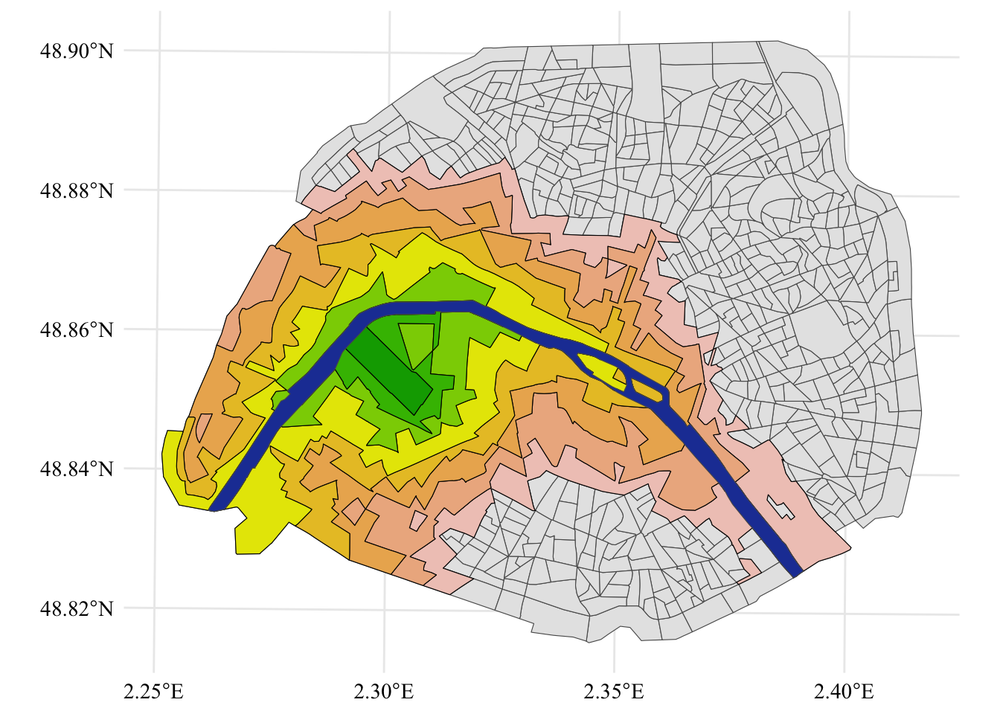
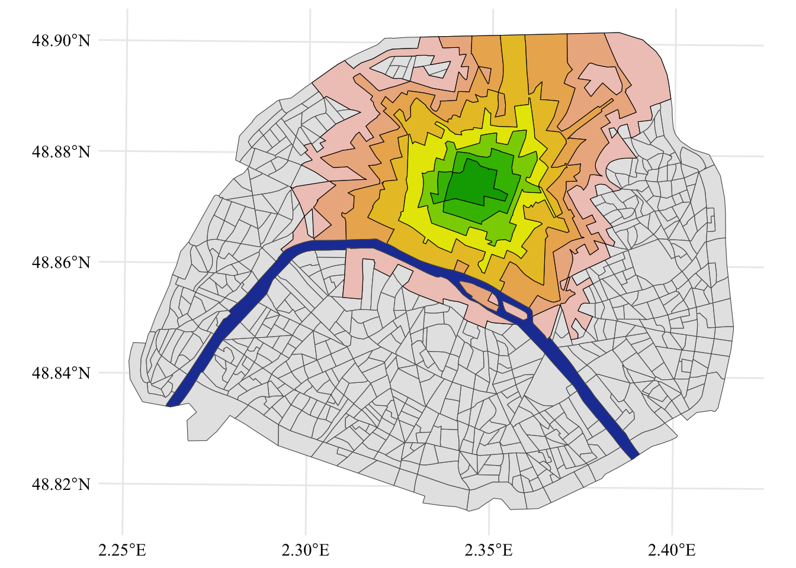
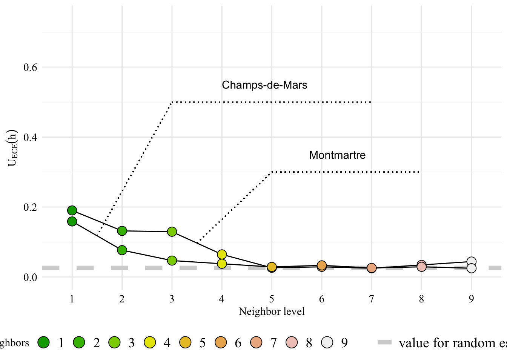

In this chapter, we mention two types of fairness evaluation:
Demographic Parity (Calders, Kamiran, and Pechenizkiy (2009)) (DP): where the objective is the independence of the predictive model from the sensitive attribute,
Equalized Odds (Hardt, Price, and Srebro (2016)) (EO): where the objective is independence conditional on all values of the label space.
However, we will compute the Equalized Odds only.
4.1 Background
Recall that our objective is to predict outcomes (prices) within an ordered set \(\mathcal{Y} := [K] = \{1, \ldots, K\}\). We thus face a multi-class classification framework. We use definitions of fairness that are suitable in this framework (see, e.g., Alghamdi et al. (2022) or Denis et al. (2021)).
4.1.1 Demographic Parity (DP)
Let \(\hat{Y}\) be the output of the predictive model \(h\in\mathcal{H}\) defined on \(\mathcal{X}\). From the algorithmic fairness literature, the (empirical) unfairness under DP is defined as follows:
Fairness under Demographic Parity
The unfairness under DP of a classifier \(h\) is quantified by \[
\mathcal{U}_{DP}(h) := \max_{a\in\mathcal{A}, k\in[K]} \left|\, \hat{\mathbb{P}}(\hat{Y} = k | ±\, A = a) - \hat{\mathbb{P}}(\hat{Y} = k)\, \right|\enspace,
\]
where (A ) with ( := [M] = {1, , M}) is a discrete group representing specific geographic locations, which constitutes our sentitive attribute.
A model \(h\) is called (empirically) exactly fair under DP i.f.f. \(\mathcal{U}_{DP}(h) = 0\).
When the label \(Y\) is assumed to be unbiased, there emerges a preference for a more nuanced measure of unfairness. Specifically, DP may hinder the realization of an ideal prediction scenario, such as granting loans precisely to those who are unlikely to default.
4.1.2 Equalized Odds (EO)
We assume knowledge of the true and unbiased label \(Y\). The fairness measure under EO is defined as follows:
Fairness under Equalized Odds
The unfairness under EO of a classifier \(h\) is quantified by \[
\mathcal{U}_{EO}(h) := \max_{a\in\mathcal{A}, k, k'\in[K]} \left|\,\hat{\mathbb{P}}(\hat{Y} = k |Y \, = k', \,A = a) - \hat{\mathbb{P}}(\hat{Y} = k | \,Y = k'\,)\right|\enspace.
\tag{4.1}\]
A model \(h\) is called (empirically) fair under EO i.f.f. \(\mathcal{U}_{EO}(h) = 0\).
In R, we define the eo_measure() function to compute component of the Equalized Odds formula, for a given protected group \(a\).
#' Calculate Equalized Odds Metrics#' #' @param obs_name name of the variable with observed values in the data#' @param pred_name name of the variable with predicted values in the data#' @param quantile_cutoffs quantile cutoffs to use to partition observed and #' predicted values#' @param group_1 CODE_IRIS belonging to the group of interest ($a$)#' @param baseline_data data with all the observations#' #' @returns a tibble where each row corresponds to a combination of levels of#' the predicted value ($k$, column `quant_predicted`) and the observed #' value ($k'$, column `quant_observed`). For each row, the column #' `value_diff` gives $\hat{P}(\hat{Y} = k | Y = k', A=a) -$ #' $\hat{P}(\hat{Y} = k | Y = k')$ ()eo_measure <-function(obs_name ="pm2",pred_name ="pm2_estimated", quantile_cutoffs, group_1, baseline_data){# Assign each bin (based on quantile_cutoffs) to the observed and to the# predicted values data <- baseline_data |>mutate(cut_observed =cut(!!sym(obs_name), quantile_cutoffs, c(1:(length(quantile_cutoffs) -1)) ) ) |>mutate(cut_predictions =cut(!!sym(pred_name), quantile_cutoffs, c(1:(length(quantile_cutoffs) -1)) ) ) retainer_1 <-c() retainer_2 <-c() value_retainer <-c()# Looping over classes (k)for (level_1 inc(1:(length(quantile_cutoffs) -1))) {# Looping over classes (k')for (level_2 inc(1:(length(quantile_cutoffs) -1))) {# Identify whether Y==k & \hat{Y} == k' bucket_tmp <- data |>select( CODE_IRIS, !!obs_name, !!pred_name, cut_observed, cut_predictions ) |>mutate(in_bucket =if_else( cut_observed == level_1 & cut_predictions == level_2, 1, 0) )# \hat{P}(\hat{Y} = k | Y = k') p_average <- bucket_tmp |>pull(in_bucket)|>mean(na.rm = T)# \hat{P}(\hat{Y} = k | Y = k', A=a) p_special <- bucket_tmp|>filter(CODE_IRIS %in% group_1) |>pull(in_bucket) |>mean(na.rm = T)# Store this (we need to find the max among those at the end of the loop) value_tmp <-abs(p_special - p_average) value_retainer <-c(value_retainer, value_tmp) retainer_1 <-c(retainer_1, level_1) retainer_2 <-c(retainer_2, level_2) } }tibble(value_diff = value_retainer, quant_observed = retainer_1, quant_estimated = retainer_2 )}
In Section 2.3 from Chapter 2, we computed the minimum distance from one iris to another, considering distances up to 30. We will also need this informations.
Let us compute the Equalized Odds, using the eo_measure() function. We will consider the predicted prices as well as some randomly drawn values. In each case, we will compute the Equalized Odds.
4.3.1 EO with Predicted Prices
We need to define a partitioning of the data. We consider the quantiles of the observed price as the cutoffs. We will make the number of neighbors used to spatially smooth data vary. But before doing so, we would like to spend some time with a small example.
We want to examine the variation of the EO depending on the aggregation considered. Let us consider the immediate neighbors to begin with.
num_neigh <-1
We will focus on two IRIS: Montmartre and Champs-de-Mars (see Figure 2.4 from Chapter 2 to locate those two IRIS on the Parisian map). We extract the IRIS codes of those two IRIS.
Let us now turn to the evaluation of EO where we no longer use the predicted prices, but rather draw random values, in a similar fashion to what was done in Section 3.5.2 from Chapter 3.
We define a function, eo_measure_random(){R} that will compute the EO based on random values for the predicted prices. This function works as follows:
Simulation of observed prices:
we draw values from a Uniform distribution, where the bounds are the price range from the estimated prices
#' Calculate Equalized Odds Metrics using randomly drawn predicted values#' #' @param obs_name name of the variable with observed values in the data#' @param pred_name name of the variable with predicted values in the data#' @param quantile_cutoffs quantile cutoffs to use to partition observed and #' predicted values#' @param baseline_data data with all the observations#' #' @returns a list with two elements:#' - `data_random` the data set with randomly drawn values for the prediction#' - `metrics`: #' a tibble where each row corresponds to a combination of levels of#' the predicted value ($k$, column `quant_predicted`) and the observed #' value ($k'$, column `quant_observed`). For each row, the column #' `value_diff` gives $\hat{P}(\hat{Y} = k | Y = k', A=a) -$ #' $\hat{P}(\hat{Y} = k | Y = k')$ ()eo_measure_random <-function(obs_name ="pm2",pred_name ="pm2_estimated", quantile_cutoffs, baseline_data) {# Simulate estimated prices----# bounds for the Uniform range_prices <- baseline_data |>pull(!!pred_name) |>range()# No values to draw rand_obs <-nrow(baseline_data)# Draw values random_prices <-runif(rand_obs, range_prices[1], range_prices[2])# Replace observed values by random ones data_random <- baseline_data |>mutate(!!pred_name :=!!random_prices)# Assign each bin (based on quantile_cutoffs) to the observed and to the# 'predicted' values (random data) data_random <- data_random |>mutate(cut_observed =cut(!!sym(obs_name), quantile_cutoffs, c(1:(length(quantile_cutoffs) -1)) ) )|>mutate(cut_predictions =cut(!!sym(pred_name), quantile_cutoffs, c(1:(length(quantile_cutoffs) -1)) ) )# Assign each bin (based on quantile_cutoffs) to the observed and to the# predicted values (baseline data) data <- baseline_data |>mutate(cut_observed =cut(!!sym(obs_name), quantile_cutoffs, c(1:(length(quantile_cutoffs) -1)) ) )|>mutate(cut_predictions =cut(!!sym(pred_name), quantile_cutoffs, c(1:(length(quantile_cutoffs) -1)) ) ) retainer_1 <-c() retainer_2 <-c() value_retainer <-c()# Looping over classes (k)for (level_1 inc(1:(length(quantile_cutoffs) -1))) {# Looping over classes (k)for (level_2 inc(1:(length(quantile_cutoffs) -1))) {## Identify whether Y==k & \hat{Y} == k' (baseline data) bucket_tmp <- data |>select( CODE_IRIS, !!obs_name, !!pred_name, cut_observed, cut_predictions ) |>mutate(in_bucket =if_else( cut_observed == level_1 & cut_predictions == level_2, 1, 0) )# (random data) bucket_random_tmp <- data_random |>select( CODE_IRIS, !!obs_name, !!pred_name, cut_observed, cut_predictions ) |>mutate(in_bucket =if_else( cut_observed == level_1 & cut_predictions == level_2, 1, 0) )## \hat{P}(\hat{Y} = k | Y = k') (on baseline data) p_average <- bucket_tmp |>pull(in_bucket) |>mean(na.rm = T)## \hat{P}(\hat{Y} = k | Y = k', A=a) (on random data) p_special <- bucket_random_tmp |>pull(in_bucket) |>mean(na.rm = T)# Store this (we need to find the max among those at the end of the loop) value_tmp <-abs(p_special - p_average) value_retainer <-c(value_retainer, value_tmp) retainer_1 <-c(retainer_1, level_1) retainer_2 <-c(retainer_2, level_2) } }list(data_random = data_random,metrics =tibble(value_diff = value_retainer, quant_observed = retainer_1, quant_estimated = retainer_2 ) )}
Let us now visualize how the EO metrics expands as the level of spatial aggregation increases, starting from the two IRIS regions corresponding to Champs-de-Mars and Montmartre.
Let us isolate each level of neighbors for Champs-de-Mars and Montmartre. The following loop will create objects named full_champ_1 (immediate neighbors), full_champ_2 (neighbors of neighbors), etc. up to full_champ_8
map_champ <- shapes_paris |>mutate(centroid =st_centroid(geometry)) |>ggplot() +geom_sf() +geom_sf(data = full_champ_8, fill = colors_want[8], color ='black') +geom_sf(data = full_champ_7, fill = colors_want[7], color ='black') +geom_sf(data = full_champ_6, fill = colors_want[6], color ='black') +geom_sf(data = full_champ_5, fill = colors_want[5], color ='black') +geom_sf(data = full_champ_4, fill = colors_want[4], color ='black') +geom_sf(data = full_champ_3, fill = colors_want[3], color ='black') +geom_sf(data = full_champ_2, fill = colors_want[2], color ='black') +geom_sf(data = full_champ_1, fill = colors_want[1], color ='black') +geom_sf(data = shapes_seine, fill = col_seine) +global_theme() +theme(legend.position ='bottom') +labs(fill ='EO measure')map_champ
Figure 4.1: Champs de Mars and its IRIS neighbors.

Display the codes used to create the Figure.
map_mont <- shapes_paris |>mutate(centroid =st_centroid(geometry)) |>ggplot() +geom_sf() +geom_sf(data = full_mont_8, fill = colors_want[8], color ='black') +geom_sf(data = full_mont_7, fill = colors_want[7], color ='black') +geom_sf(data = full_mont_6, fill = colors_want[6], color ='black') +geom_sf(data = full_mont_5, fill = colors_want[5], color ='black') +geom_sf(data = full_mont_4, fill = colors_want[4], color ='black') +geom_sf(data = full_mont_3, fill = colors_want[3], color ='black') +geom_sf(data = full_mont_2, fill = colors_want[2], color ='black') +geom_sf(data = full_mont_1, fill = colors_want[1], color ='black') +geom_sf(data = shapes_seine, fill = col_seine) +global_theme() +theme(legend.position ='bottom') +labs(fill ='EO measure')map_mont
Figure 4.2: Montmartre and its IRIS neighbors.

Now, let us plot the EO measure as a function of the neighbor level.
Figure 4.4: Expected Calibration Error Measure for Montmartre and Champ-de-Mars.

4.5 EO on each Arrondissement
Now, we can compute the Equalized Odds metric on each arrondissement. For convenience, let us create a function, calculate_eo_arrond(), that computes EO on a single arrondissement.
#' EO metric for an arrondissement#' #' @param arrond name of the arrondissement#' @param num_neigh distance of neighbors to include#' @param obs_name name of the variable with observed values in the data#' @param pred_name name of the variable with predicted values in the data#' @param data dataset to usecalculate_eo_arrond <-function(arrond, num_neigh, obs_name ="pm2",pred_name ="pm2_estimated", data) {# Cutoff to partition data limits_quants <- data |>pull(!!obs_name) |>quantile(seq(0,1,0.2)) |>unname()# Extract IRIS in the arrondissement want_arrond <- data |>filter(NOM_COM %in% arrond) |>pull(CODE_IRIS) |>unique() re_arrond <-eo_measure(obs_name = obs_name,pred_name = pred_name,quantile_cutoffs = limits_quants, group_1 = want_arrond, baseline_data = data ) ece_arrond <- re_arrond |>arrange(desc(value_diff)) |>head(1) |>pull(value_diff) ece_arrond}
All that needs to be done is to loop over the names of the arrondissements.
Alghamdi, Wael, Hsiang Hsu, Haewon Jeong, Hao Wang, Peter Michalak, Shahab Asoodeh, and Flavio Calmon. 2022. “Beyond Adult and COMPAS: Fair Multi-Class Prediction via Information Projection.”Advances in Neural Information Processing Systems 35: 38747–60.
Calders, T., F. Kamiran, and M. Pechenizkiy. 2009. “Building Classifiers with Independency Constraints.” In IEEE International Conference on Data Mining.
Denis, Christophe, Romuald Elie, Mohamed Hebiri, and François Hu. 2021. “Fairness Guarantee in Multi-Class Classification.”arXiv Preprint arXiv:2109.13642.
Hardt, M., E. Price, and N. Srebro. 2016. “Equality of Opportunity in Supervised Learning.” In Neural Information Processing Systems.